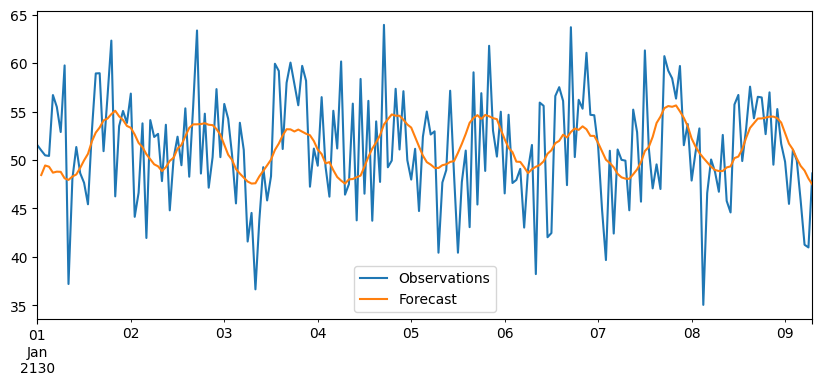
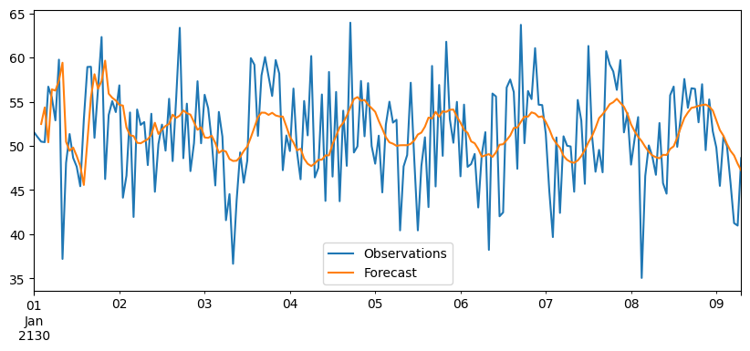
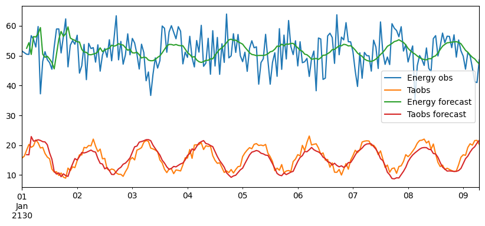

Forecast example
This notebook introduces the basic workflow using the py_online_forecast package.
It covers:
Data handling with the
fcaccessor,feature engineering using transformations,
minimal forecasting example using
WLS,online forecasting using
ForecastModel,multi-horizon forecasting using
ForecastEnsemble,transforms and sources,
hyperparameter optimization.
[45]:
import matplotlib.pyplot as plt
import numpy as np
import pandas as pd
from scipy.optimize import minimize
from py_online_forecast import *
from py_online_forecast.datasets import sample_data
from py_online_forecast.forecast_tools import ForecastFormat, Subset
Data
This example uses simulated sample data from py_online_forecast.datasets.sample_data.
The sample data is a pandas DataFrame following the “forecast-matrix” format. This requires that
the columns are a two level MultiIndex of feature names and forecast horizons,
the index is monotonically increasing and evenly spaced.
The feature names can be freely chosen, whilst the forecast horizons should be a non-negative integer. A forecast horizon of zero corresponds to “now” and may be used for observed values.
The fc accessor
To support the forecast format, a custom pandas accessor with name fc can be used. The fc accessor provides convenience methods for working with forecast-matrix data. We begin by subsetting the data based on the horizons,
[2]:
data = sample_data.fc.subset(horizons=(0, 1, 2, 4), end_index=200)
data.head()
[2]:
| Variable | energy | Taobs | Ta | ||
|---|---|---|---|---|---|
| Horizon | 0 | 0 | 1 | 2 | 4 |
| 2130-01-01 00:00:00 | 51.531885 | 15.668848 | 14.732529 | 18.112065 | 18.771499 |
| 2130-01-01 01:00:00 | 50.988901 | 16.327964 | 18.274593 | 18.991357 | 18.759832 |
| 2130-01-01 02:00:00 | 50.479686 | 18.319822 | 15.477482 | 22.260192 | 19.841512 |
| 2130-01-01 03:00:00 | 50.420587 | 20.230697 | 15.111263 | 20.589555 | 19.198036 |
| 2130-01-01 04:00:00 | 56.704199 | 19.268107 | 17.443227 | 20.205426 | 18.872228 |
The fc accessor provides several other methods, a few examples are
lagging forecast columns to align them with observations,
subsetting by variable name and horizon,
converting nearly compatible DataFrames into forecast-matrix format.
[3]:
lagged = data.fc.lag()
subset_data = data.fc.subset("Ta", "Taobs", horizons=(0, 1, 2))
converted = data.fc.convert()
lagged.head()
[3]:
| Variable | energy | Taobs | Ta | ||
|---|---|---|---|---|---|
| Horizon | 0 | 0 | 1 | 2 | 4 |
| 2130-01-01 00:00:00 | 51.531885 | 15.668848 | NaN | NaN | NaN |
| 2130-01-01 01:00:00 | 50.988901 | 16.327964 | 14.732529 | NaN | NaN |
| 2130-01-01 02:00:00 | 50.479686 | 18.319822 | 18.274593 | 18.112065 | NaN |
| 2130-01-01 03:00:00 | 50.420587 | 20.230697 | 15.477482 | 18.991357 | NaN |
| 2130-01-01 04:00:00 | 56.704199 | 19.268107 | 15.111263 | 22.260192 | 18.771499 |
[4]:
subset_data.head()
[4]:
| Variable | Taobs | Ta | |
|---|---|---|---|
| Horizon | 0 | 1 | 2 |
| 2130-01-01 00:00:00 | 15.668848 | 14.732529 | 18.112065 |
| 2130-01-01 01:00:00 | 16.327964 | 18.274593 | 18.991357 |
| 2130-01-01 02:00:00 | 18.319822 | 15.477482 | 22.260192 |
| 2130-01-01 03:00:00 | 20.230697 | 15.111263 | 20.589555 |
| 2130-01-01 04:00:00 | 19.268107 | 17.443227 | 20.205426 |
Sources & Transformations
The py_online_forecast package is built around Source and Transformation objects. A Source instance is a placeholder for data, and a Transformation instance is a source that has methods for processing data. Most transformations require other sources as inputs and are used to define data transformations for feature engineering. When data arrives, they should be matched to sources (using a dict), after which all transformations may be resolved.
[39]:
raw_data = Source("Raw data")
transformed_data = raw_data*10
raw_data_value = np.array([1, 2, 3])
transformed_data({raw_data: raw_data_value})
[39]:
array([10, 20, 30])
If no source is specified for a piece of data, it will be matched to DEFAULT_SOURCE. With this, we can simplify the above to
[41]:
transformed_data = DEFAULT_SOURCE*10
transformed_data(raw_data_value)
[41]:
array([10, 20, 30])
For basic usage, it is convenient to build our data pipeline from this source. For example, we may want to make 1-step forecasts of the energy variable using an intercept, the observed temperature Taobs and the 1-horizon forecasts Ta.
[6]:
energy = DEFAULT_SOURCE[["energy"]]
const = One()
taobs = DEFAULT_SOURCE[["Taobs"]]
ta = Subset(DEFAULT_SOURCE, "Ta", horizons=(1,))
In the above, energy, const, taobs and ta are all transformations. Except for const, they are all explicitly defined from a source (DEFAULT_SOURCE). Behind the scenes One also uses an input source, but tacitly assumes it to be the DEFAULT_SOURCE. The Subset transformation assumes input values to be of forecast-matrix type, and selects variables and horizons.
To see the output of the transformations, we can call them on the data, e.g.
[33]:
energy(data)
[33]:
| Variable | energy |
|---|---|
| Horizon | 0 |
| 2130-01-01 00:00:00 | 51.531885 |
| 2130-01-01 01:00:00 | 50.988901 |
| 2130-01-01 02:00:00 | 50.479686 |
| 2130-01-01 03:00:00 | 50.420587 |
| 2130-01-01 04:00:00 | 56.704199 |
| ... | ... |
| 2130-01-09 03:00:00 | 49.960682 |
| 2130-01-09 04:00:00 | 45.807139 |
| 2130-01-09 05:00:00 | 41.252420 |
| 2130-01-09 06:00:00 | 40.976976 |
| 2130-01-09 07:00:00 | 48.614762 |
200 rows × 1 columns
[8]:
const(data)
[8]:
array([1., 1., 1., 1., 1., 1., 1., 1., 1., 1., 1., 1., 1., 1., 1., 1., 1.,
1., 1., 1., 1., 1., 1., 1., 1., 1., 1., 1., 1., 1., 1., 1., 1., 1.,
1., 1., 1., 1., 1., 1., 1., 1., 1., 1., 1., 1., 1., 1., 1., 1., 1.,
1., 1., 1., 1., 1., 1., 1., 1., 1., 1., 1., 1., 1., 1., 1., 1., 1.,
1., 1., 1., 1., 1., 1., 1., 1., 1., 1., 1., 1., 1., 1., 1., 1., 1.,
1., 1., 1., 1., 1., 1., 1., 1., 1., 1., 1., 1., 1., 1., 1., 1., 1.,
1., 1., 1., 1., 1., 1., 1., 1., 1., 1., 1., 1., 1., 1., 1., 1., 1.,
1., 1., 1., 1., 1., 1., 1., 1., 1., 1., 1., 1., 1., 1., 1., 1., 1.,
1., 1., 1., 1., 1., 1., 1., 1., 1., 1., 1., 1., 1., 1., 1., 1., 1.,
1., 1., 1., 1., 1., 1., 1., 1., 1., 1., 1., 1., 1., 1., 1., 1., 1.,
1., 1., 1., 1., 1., 1., 1., 1., 1., 1., 1., 1., 1., 1., 1., 1., 1.,
1., 1., 1., 1., 1., 1., 1., 1., 1., 1., 1., 1., 1.])
To filter out noise, we may compose new transformations using a low-pass filter. The LowPass transformation acts on a single source as,
[9]:
lp_Taobs = LowPass(taobs, alpha=0.7)
lp_Ta = LowPass(ta, alpha=0.9)
When transformations are instantiated, some inputs may be sources, whilst others are “fixed” parameters. As a design principle, transforms should not change when they are applied to data, e.g. by calling,
[10]:
lp_Ta(data)
[10]:
array([[14.73252902],
[15.08673546],
[15.12581011],
[15.12435539],
[15.35624258],
[15.56804962],
[15.6201329 ],
[15.71450542],
[15.82513629],
[15.93598984],
[16.05130706],
[16.1547127 ],
[16.23343967],
[16.26894976],
[16.12230671],
[15.94614044],
[15.85527247],
[15.6858657 ],
[15.54162711],
[15.38306027],
[15.25433397],
[15.0038216 ],
[14.78348837],
[14.72742177],
[14.68764903],
[14.72506837],
[14.87019004],
[15.13905267],
[15.30309212],
[15.47987049],
[15.71348377],
[16.07431685],
[16.48721419],
[16.76366883],
[17.05318245],
[17.23303922],
[17.19678969],
[17.01485724],
[16.94458308],
[16.80503379],
[16.4592888 ],
[15.99876105],
[15.59505293],
[15.09556266],
[14.61636251],
[14.22118598],
[13.90078347],
[13.68035256],
[13.37425379],
[13.11729779],
[13.07261697],
[13.2308991 ],
[13.37503951],
[13.73356629],
[14.18235715],
[14.62431695],
[15.08104445],
[15.45677077],
[15.82811428],
[16.18164137],
[16.40141579],
[16.37800997],
[16.26430798],
[16.00566721],
[15.68420845],
[15.2810194 ],
[14.92424944],
[14.59731014],
[14.25358822],
[13.92841054],
[13.66719655],
[13.53529002],
[13.52250619],
[13.55596933],
[13.62633832],
[13.81154551],
[13.87347168],
[14.03768997],
[14.23457874],
[14.46970544],
[14.6924122 ],
[14.96210215],
[15.21717935],
[15.45675936],
[15.61780595],
[15.69506713],
[15.83430056],
[15.8824945 ],
[16.05249125],
[16.12120919],
[16.16781163],
[16.03989105],
[15.78937283],
[15.49767351],
[15.29746844],
[15.17493138],
[15.09552522],
[15.06002218],
[14.9936625 ],
[15.08223033],
[15.23835806],
[15.52441905],
[15.96620802],
[16.43198142],
[16.75680035],
[17.11766898],
[17.43836809],
[17.7607238 ],
[18.0618999 ],
[18.2925187 ],
[18.24933311],
[18.15664597],
[17.91789513],
[17.63196195],
[17.40463708],
[17.01839178],
[16.66896765],
[16.33755643],
[15.9414747 ],
[15.56406482],
[15.39328389],
[15.30637224],
[15.37117287],
[15.58541915],
[15.87088341],
[16.31011515],
[16.73900368],
[17.09941046],
[17.43812467],
[17.64816831],
[17.82688486],
[17.91742923],
[17.90997648],
[17.75102311],
[17.49834837],
[17.01956044],
[16.62420267],
[16.27466453],
[15.86657382],
[15.53408314],
[15.19795118],
[14.9134505 ],
[14.67520356],
[14.48195627],
[14.32716652],
[14.34447825],
[14.39529668],
[14.44083763],
[14.69657235],
[15.03064346],
[15.40941518],
[15.75747025],
[16.12066856],
[16.58064036],
[17.07494593],
[17.54003414],
[17.88133373],
[18.23485343],
[18.52794089],
[18.67299109],
[18.66457784],
[18.60946235],
[18.43985523],
[18.12043882],
[17.75558274],
[17.32882837],
[16.95552849],
[16.57264448],
[16.16994288],
[15.92546342],
[15.88663141],
[15.96729963],
[16.20861881],
[16.55497355],
[16.94277045],
[17.38818056],
[17.77851769],
[18.10996479],
[18.45840731],
[18.74905435],
[18.85374676],
[18.91607208],
[18.86768339],
[18.75930833],
[18.50218167],
[18.14056825],
[17.82861602],
[17.53887614],
[17.20214874],
[16.82038349],
[16.64397337],
[16.37050375],
[16.05307498],
[15.88041201],
[15.83026206],
[15.92383296],
[15.94470948],
[15.87511007],
[15.79403227],
[15.78679948]])
With an important exception (see below), this should not change the lp_Ta object. Fixed parameters may instead be changed using the specific interface of the transformation, e.g. for LowPass transformations we can change the smoothing parameter alpha by overwriting it,
[11]:
lp_Ta.alpha = 0.8
Some transformations are not memory-less, i.e. they require some state or old data to continue where they left of. An example of this is the LowPass filter, which requires the previous value of the input time series. In an online setting, data cannot be processed in batch, and handling of such “memory” states is important. Transformations can return this memory state along with the output by using return_recursion_pars,
[12]:
lp_Ta(data, return_recursion_pars = True)
[12]:
(array([[14.73252902],
[15.44094189],
[15.44824991],
[15.3808525 ],
[15.79332747],
[16.12952456],
[16.12139615],
[16.20988852],
[16.33207365],
[16.45239327],
[16.57974704],
[16.68087031],
[16.73309273],
[16.70418229],
[16.32384969],
[15.93120855],
[15.75245899],
[15.43420815],
[15.19606248],
[14.94804172],
[14.77759283],
[14.37191633],
[14.05763092],
[14.09066921],
[14.13847424],
[14.32314788],
[14.69377531],
[15.26678353],
[15.56931626],
[15.86962816],
[16.25890319],
[16.87148546],
[17.53784642],
[17.88062925],
[18.23626441],
[18.35936156],
[18.06159802],
[17.52477147],
[17.28224029],
[16.93561028],
[16.218005 ],
[15.34520626],
[14.66850097],
[13.85483084],
[13.14457689],
[12.64858095],
[12.32229695],
[12.19713243],
[11.88157892],
[11.6662019 ],
[11.86705943],
[12.42473519],
[12.8742488 ],
[13.6914605 ],
[14.59746338],
[15.39836173],
[16.15700778],
[16.69326775],
[17.18865538],
[17.62360134],
[17.77475817],
[17.45327807],
[17.01082047],
[16.34423643],
[15.63360507],
[14.83734764],
[14.21254208],
[13.70100494],
[13.19282214],
[12.75462 ],
[12.46695013],
[12.44318635],
[12.63603943],
[12.88025905],
[13.1561391 ],
[13.62059331],
[13.7826361 ],
[14.12923979],
[14.50470737],
[14.92093504],
[15.27610264],
[15.69874446],
[16.06157039],
[16.3718522 ],
[16.51092682],
[16.486825 ],
[16.6069403 ],
[16.54880022],
[16.75553258],
[16.7523602 ],
[16.71933487],
[16.35318907],
[15.78949302],
[15.20607034],
[14.86398083],
[14.70560423],
[14.64065736],
[14.66062485],
[14.60778494],
[14.86209612],
[15.21837842],
[15.79449633],
[16.62405881],
[17.42403545],
[17.87526251],
[18.37330734],
[18.76357788],
[19.14324734],
[19.46909483],
[19.64889345],
[19.29124731],
[18.89749021],
[18.27181968],
[17.62916841],
[17.17507737],
[16.44849871],
[15.86362906],
[15.36187435],
[14.7648473 ],
[14.24535302],
[14.16753352],
[14.23886029],
[14.58196394],
[15.16829828],
[15.82265098],
[16.71076095],
[17.48840885],
[18.05934138],
[18.5447836 ],
[18.74353911],
[18.88189804],
[18.85198415],
[18.65016767],
[18.18422269],
[17.59223329],
[16.61588045],
[15.9059009 ],
[15.35048498],
[14.71913947],
[14.28364498],
[13.86146869],
[13.55976382],
[13.35400728],
[13.23175197],
[13.17221333],
[13.43782742],
[13.72079444],
[13.9467768 ],
[14.5570584 ],
[15.25310341],
[15.96615486],
[16.55091706],
[17.11862432],
[17.83897678],
[18.57592063],
[19.20590211],
[19.55532769],
[19.9275683 ],
[20.17520024],
[20.13584878],
[19.82645074],
[19.48384518],
[18.96975438],
[18.22494173],
[17.47432899],
[16.67707099],
[16.0608227 ],
[15.47399584],
[14.88832238],
[14.65568756],
[14.83197871],
[15.2042457 ],
[15.83949483],
[16.60602912],
[17.37141179],
[18.17650374],
[18.79951338],
[19.25820843],
[19.72544474],
[20.05333135],
[20.00186076],
[19.8968886 ],
[19.60394792],
[19.2399449 ],
[18.62956425],
[17.88086089],
[17.30889791],
[16.83336178],
[16.30100984],
[15.71770712],
[15.58542215],
[15.25019316],
[14.83939774],
[14.73680725],
[14.8652283 ],
[15.24537685],
[15.42282111],
[15.38799997],
[15.32326639],
[15.40295399]]),
{Subset(['Ta'], horizons=(1,)): [False, False, True, False, False],
ToArray: None,
LowPass: array([15.40295399])})
This information can then be passed to new calls of the transformation in order to resume computation from the old state. To make this more convenient, we may instead use the track_state flag, making the transformation handle the memory state and automatically use it in future calls, e.g.,
[13]:
lp_Ta(data, track_state = True)
lp_Ta.recursion_pars
[13]:
{Subset(['Ta'], horizons=(1,)): [False, False, True, False, False],
ToArray: None,
LowPass: array([15.40295399])}
Note: If a transformation is called again without
track_state=True, any stored state will not be used, nor will it be overwritten.
Transformation shorthands
New sources can be created by composing transforms (e.g. instantiating LowPass on taobs), or by using common arithmetic operators or indexing, e.g.,
[14]:
lp_square = lp_Ta**2
sum_transform = (lp_Ta + lp_square)[:10]
sum_transform(data)
[14]:
array([[231.77994042],
[253.86362847],
[254.09667521],
[251.95147616],
[265.22252002],
[276.29108723],
[276.02080983],
[278.97037442],
[283.06870345],
[287.13363761]])
Basic prediction
The goal in this section is to forecast the energy variable using the ambient temperature observation and forecast transformations defined previously. To do so, we first form a design matrix for a weighted-least-squares type problem,
[15]:
X = DesignMatrix(const, lp_Taobs, lp_Ta)
We can then define a prediction model using the WLS transformation,
[16]:
pred = WLS(X, energy, horizon=1)
Calling the prediction on the data fits the model and returns predictions. With track_state=True, recursive state such as fitted WLS parameters is stored and can be inspected afterwards.
[17]:
result = pred(data, track_state=True)
pred.predictor
[17]:
array([[53.97516386],
[-0.85765934],
[ 0.67845426]])
For convenient use with forecast-matrix data, the output can be wrapped in ForecastFormat.
[18]:
pred.set_format(ForecastFormat)
result = pred(data, track_state=True)
fig, ax = plt.subplots(figsize=(10, 4))
data.plot(y="energy", ax=ax)
result["mean"].fc.lag().plot(ax=ax)
ax.plot(data.index, data["energy"], label="Observations")
plt.legend(["Observations", "Forecast"])
plt.show()
/tmp/ipykernel_80079/4142871415.py:7: UserWarning: This axis already has a converter set and is updating to a potentially incompatible converter
ax.plot(data.index, data["energy"], label="Observations")

As a simple check, compare the fitted coefficients with a direct NumPy least-squares estimate.
[19]:
beta_ols = pred.predictor
pred.reset_state()
X_data = pred.X(data)
X_train_data = X_data[:-1]
Y_data = pred.Y(data)
beta_np = np.linalg.lstsq(X_train_data, Y_data.to_numpy()[1:], rcond=None)[0]
print(f"Model parameters from OLS model: {beta_ols}")
print(f"Model parameters from numpy lstsq: {beta_np}")
Model parameters from OLS model: [[53.81844016]
[-0.82042603]
[ 0.65485707]]
Model parameters from numpy lstsq: [[53.97516386]
[-0.85765934]
[ 0.67845426]]
Online forecasting with recursive ridge regression
For online forecasting, the standard WLS approach is sub-optimal. We will instead use the purpose built RRR transformation via. the wrapper class ForecastModel. The RRR transformation functions similarly to the WLS transformation, but uses a recursive ridge regression estimator. The ForecastModel provides convenience features for forecast-matrix data. We can define a model as,
[20]:
X = (const, lp_Taobs, lp_Ta)
model = ForecastModel(X, energy, 1, track_memory=True, init_K=0.00001)
Then the fit method resets the state (if any) and applies the transformation.
[21]:
result = model.fit(data, mem=1)
fig, ax = plt.subplots(figsize=(10, 4))
data.plot(y="energy", ax=ax)
result["mean"].shift(1).plot(ax=ax)
plt.legend(["Observations", "Forecast"])
plt.show()

Multivariate target
The recursive ridge workflow also supports multivariate targets.
[22]:
target = DEFAULT_SOURCE[["energy", "Taobs"]]
model_multi = ForecastModel(X, target, horizon=1, track_memory=True, init_K=0.00001)
result_multi = model_multi.fit(data, mem=1)
fig, ax = plt.subplots(figsize=(10, 4))
data.plot(y="energy", ax=ax)
data.plot(y="Taobs", ax=ax)
result_multi["mean"].shift(1).plot(ax=ax)
plt.legend(["Energy obs", "Taobs", "Energy forecast", "Taobs forecast"])
plt.show()

3.4 Simulate online updates
To emulate an online setting, data is passed to the model one observation at a time.
Inputs are assumed to have observations along the first axis. For a single observation, this means using a one-row DataFrame such as data.iloc[[i]].
[23]:
subsets = [data.iloc[[i]] for i in range(len(data))]
model.reset_state()
predictions = []
for s in subsets:
p = model.update(s, mem=1)["mean"]
predictions.append(p)
predictions = pd.concat(predictions)
print(np.allclose(result["mean"].to_numpy()[1:], predictions.to_numpy()[1:]))
True
[24]:
model.update(data, update_predictor=False)
[24]:
{'mean': Variable energy
Horizon 1
2130-01-01 00:00:00 48.268914
2130-01-01 01:00:00 49.295261
2130-01-01 02:00:00 49.162442
2130-01-01 03:00:00 48.522786
2130-01-01 04:00:00 48.629899
... ...
2130-01-09 03:00:00 49.251509
2130-01-09 04:00:00 48.748764
2130-01-09 05:00:00 47.893458
2130-01-09 06:00:00 47.248101
2130-01-09 07:00:00 47.234056
[200 rows x 1 columns],
'cov': Variable (energy, energy)
Horizon 1
2130-01-01 00:00:00 29.754629
2130-01-01 01:00:00 29.601694
2130-01-01 02:00:00 29.617114
2130-01-01 03:00:00 29.705725
2130-01-01 04:00:00 29.691394
... ...
2130-01-09 03:00:00 29.619501
2130-01-09 04:00:00 29.676239
2130-01-09 05:00:00 29.818046
2130-01-09 06:00:00 29.953284
2130-01-09 07:00:00 29.954957
[200 rows x 1 columns]}
Multi-horizon forecasting
A simple approach for making multi-horizon predictions is to make a new model for each. Here we create a second model for the 2-hour-ahead forecast.
[25]:
ta2 = Subset(DEFAULT_SOURCE, "Ta", horizons=(2,))
lp_Ta2 = LowPass(ta2, alpha=0.8)
X2 = (const, lp_Taobs, lp_Ta2)
model_2h = ForecastModel(X2, energy, horizon=2, track_memory=True, init_K=0.00001)
ref_1h = model.fit(data, mem=1)
ref_2h = model_2h.fit(data, mem=1)
Model ensembles
In many cases, such two models may share many basic input features, and we may benefit from evaluating them in a single pass without recomputing known values. The Combine transformation evaluates all inputs and returns a dict with the results.
[26]:
models = Combine(model, model_2h)
result = models(data, mem=1)
result_model_1h = result[model]
result_model_2h = result[model_2h]
result_model_1h["mean"].head(), result_model_2h["mean"].head()
[26]:
(Variable energy
Horizon 1
2130-01-01 00:00:00 NaN
2130-01-01 01:00:00 52.477670
2130-01-01 02:00:00 54.352502
2130-01-01 03:00:00 50.405863
2130-01-01 04:00:00 56.399926,
Variable energy
Horizon 2
2130-01-01 00:00:00 NaN
2130-01-01 01:00:00 NaN
2130-01-01 02:00:00 53.309106
2130-01-01 03:00:00 43.747420
2130-01-01 04:00:00 19.704705)
The ForecastEnsemble
ForecastEnsemble creates multiple models and splits forecast-matrix data by horizon. The input_horizons argument (also supported by ForecastModel) determines which of the input features to use based on the horizon. If auto is selected, the model will use horizons \((0,h)\) where \(h\) is the forecast horizons of the given model.
[29]:
ta_all = DEFAULT_SOURCE[["Ta"]]
lp_Ta_all = LowPass(ta_all, alpha=0.8)
Xall = (const, lp_Taobs, lp_Ta_all)
horizon_models = ForecastEnsemble(
Xall,
energy,
horizons=(1, 2),
input_horizons="auto",
track_memory=True,
init_K=0.00001,
)
horizon_result = horizon_models.fit(data, mem=1)
Just as before, we can also make updates in an online manner,
[30]:
horizon_models.reset_state()
predictions = []
for s in subsets:
p = horizon_models.update(s, mem=1)["mean"]
predictions.append(p)
predictions = pd.concat(predictions, axis=0)
print(np.allclose(horizon_result["mean"].to_numpy()[2:], predictions.to_numpy()[2:]))
True
Hyperparameter optimization
Model hyperparameters, including transform parameters and predictor settings, can be optimized by scoring the fitted model. To enable this, prediction transformations (such as RRR and ForecastModel) may expose a “score mode”. For these models, setting score mode will add an extra evaluation step in the transformation, which includes a “score” in the output.
Say for instance a slow trend is added to the data.
[42]:
trend_data = data.copy()
trend_data[("energy", 0)] += 0.1 * np.arange(len(trend_data))
The optimal low-pass filter parameter may depend on the data, and we thus estimate it in an outer loop,
[43]:
model.set_score_mode()
def obj(x):
alpha, mem = x
lp_Taobs.alpha = alpha
lp_Ta.alpha = alpha
return model.fit(trend_data, mem=mem)["score"]
res = minimize(obj, x0=[0.5, 0.5], bounds=[(0, 1), (0, 1)], method="Nelder-Mead")
print(res)
message: Optimization terminated successfully.
success: True
status: 0
fun: 5.700395088827669
x: [ 3.377e-01 9.324e-01]
nit: 63
nfev: 120
final_simplex: (array([[ 3.377e-01, 9.324e-01],
[ 3.378e-01, 9.324e-01],
[ 3.377e-01, 9.324e-01]]), array([ 5.700e+00, 5.700e+00, 5.700e+00]))
The ForecastEnsemble enables a similar approach,
[44]:
horizon_models.set_score_mode()
def obj_horizon(x):
alpha, mem = x
lp_Taobs.alpha = alpha
lp_Ta_all.alpha = alpha
result = horizon_models.fit(trend_data, mem=mem)
return np.mean(list(result["score"].values()))
res_horizon = minimize(
obj_horizon,
x0=[0.5, 0.5],
bounds=[(0, 1), (0, 1)],
method="Nelder-Mead",
)
print(res_horizon)
message: Optimization terminated successfully.
success: True
status: 0
fun: 6.1434452045205035
x: [ 4.374e-01 9.250e-01]
nit: 61
nfev: 116
final_simplex: (array([[ 4.374e-01, 9.250e-01],
[ 4.375e-01, 9.250e-01],
[ 4.375e-01, 9.250e-01]]), array([ 6.143e+00, 6.143e+00, 6.143e+00]))
Custom transforms and predictors
…